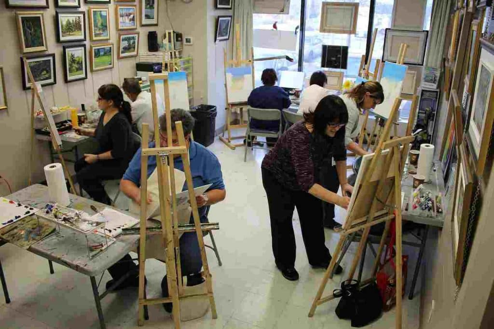

¡Sumate a nuestros cursos sobre el Fauvismo!
Descubrí cómo esta vanguardia revolucionó el uso del color y la expresión artística. Aprendé sobre Matisse, Derain y otros exponentes mientras explorás sus obras de forma dinámica e interactiva. ¡Viví el arte de una manera única y creativa, y llevá tu conocimiento al próximo nivel!
¡Explorá el Fauvismo en el mapa!
Descubrí en qué museos y ciudades del mundo podés encontrar las principales obras de los grandes fauvistas. Usá nuestro mapa interactivo y planificá tu próxima visita para verlas en vivo. ¡Conectá con el arte desde cualquier lugar del mundo!
Próximos Eventos
- 21 de septiembre: Taller de Pintura Fauvista - Modalidad Presencial
- 05 de octubre: Recorrido Virtual por Obras de Matisse
- 15 de octubre: Charla: "El Color en el Fauvismo" - Online
- 30 de octubre: Exposición de Alumnos - Muestra Colectiva